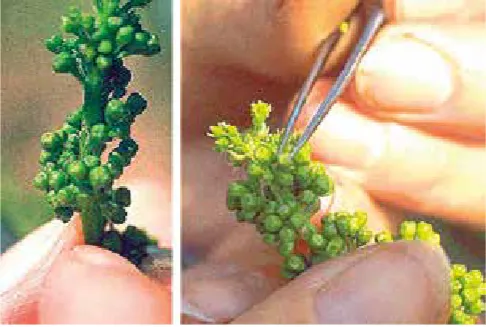
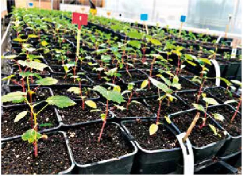
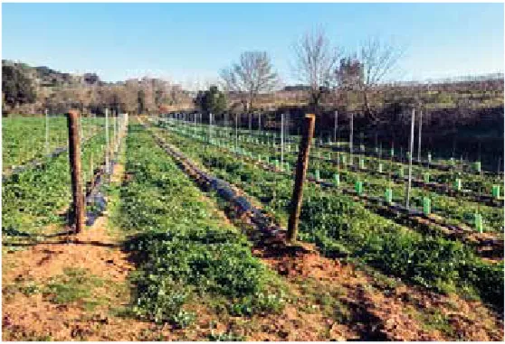
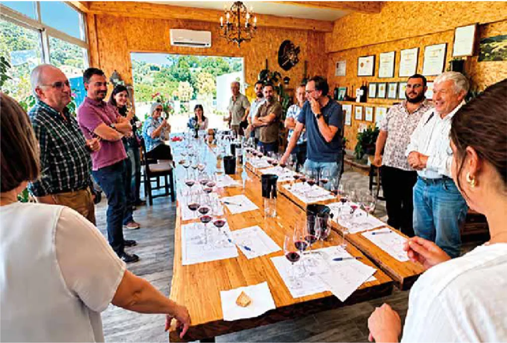

Capítulo 04 · Status quo do projeto Castas Resistentes
Status quo do projeto Castas Resistentes
Status quo atual dos resultados concretos do projeto de castas resistentes da Univ. Évora/PLANSEL: PEPAC – C.1.1.5, com base no PDR 784.
Assegurar a documentação e a consolidação dos resultados físicos alcançados no âmbito do programa de melhoramento genético desenvolvido em consórcio científico-profissional, reunindo e sistematizando toda a informação do material em plantas novas resistentes atualmente disponível.
Potencial qualitativo das modernas castas resistentes
Os viticultores e consumidores portugueses não dispõem de uma base objetiva de comparação que lhes permita avaliar o verdadeiro potencial qualitativo das modernas castas resistentes obtidas por programas internacionais de melhoramento genético. Esta realidade contrasta com a situação observada na Europa Central e Oriental, onde essas castas já se encontram amplamente difundidas, proporcionando uma perceção mais realista das capacidades atuais da genética vitícola.
Considerando o elevado potencial ecológico destas castas, a sua crescente competitividade económica e a evolução verificada noutros países da União Europeia, prevê-se um aumento significativo da procura por estas variedades nas próximas décadas. Neste contexto, a PLANSEL, em colaboração com a VITICERT, pretende assegurar que Portugal disponha de variedades próprias, reduzindo a futura dependência de material vegetal protegido proveniente de viveiros estrangeiros. Um fator determinante neste processo consiste na identificação da diversidade dos diferentes tipos de material existente e, no caso de já existir, a documentação das técnicas de melhoramento utilizadas e ainda as observações obtidas, de forma a dar resposta a três objetivos fundamentais:
1. Elevada qualidade enológica, assegurada por um rigoroso processo de avaliação técnica e sensorial dos vinhos produzidos em nível de campos experimentais;
2. Elevado potencial produtivo, garantindo níveis de rendimento por hectare, economicamente sustentáveis;
3. Elevado nível de resistência genética e durabili-
dade dessa resistência, obtidos através da diversificação da genética das novas variedades e da integração contínua de novos fatores de resistência a agentes bióticos, bem como de características de adaptação a fatores abióticos, designadamente os associados às alterações climáticas.
Objetivo: validar, através da experimentação, a capacidade de adaptação regional de castas resistentes, demonstrando o seu desempenho agronómico e enológico nos diferentes Terroir nacionais, de forma a gerar evidência técnico-científica que suporte a sua futura utilização pelo setor vitivinícola em regime de livre adoção.
O esquema de melhoramento PLANSEL a favor de Castas Novas a partir de 2018
a. 2018 – Definir progenitores para introgressão de resistência;
b. 2019/24 – Instalar 2 campos de crescimento de plantas de sementeira (pé franco) Campo Safira e Campo Canal 2;
c. 2023 – Campo Canal 1: genótipos próprios; plantas (enxertadas) PIWI import.;
d. 2025/8 – Completar Canal 1 com material em curso de seleção projetos PLANSEL.
Existência de > 200 candidatos de Castas Resistentes na PLANSEL: iniciar a seleção para Campos de Experimentação
• 32 castas PIWI internacionais ex situ
(6 plantas enxertadas)
• 10 castas/genótipos PIWI internacionais ex situ (plantas individuais)
• 72 genótipos PIWI nacionais enxertados ex situ
(6 plantas cada), na Q. Canal 1 (C1).
• 45 genótipos PIWI nacionais enxertados ex situ (1-2 plantas cada), na Q. C1
• 83 genótipos com resistência in situ + viveiro,
previstos em 2027, para com pletar a plantação C1
• iniciar o processo de piramidação: Rpv 10 e 12; Rpg e Rpd, cruzamento realizados em 2026
Três tipos de campos de material resistente existente na PLANSEL
1. Existência de genótipos novos com plantas de sementeira em estufa pé franco (ver anexo 4, lista de cruzamento 2026 – projeto PLANSEL).
Após uma campanha de dois cruzamentos muito bem-sucedida, iniciada em 2019 e que envolveu mais de 100.000 cruzamentos e respetivas avaliações de campo, a PLANSEL deparou-se com o desafio de estabelecer um esquema pró- Fig. 17 e 18 – Processo de castração florescências.


Fig. 19 – Plântulas resultado de cruzamento em estufa de crescimento.
prio de seleção redutiva. A inoculação com esporângios de Plasmopara viticola (míldio), em condições de estufa, revelou-se tecnicamente viável, permitindo eliminar uma elevada percentagem de plântulas suscetíveis nas fases iniciais do processo de seleção. Em contrapartida, a inoculação com conídios de Erysiphe necator (oídio) mostrou-se consideravelmente mais complexa e menos eficiente. Paralelamente, a técnica dos discos foliares foi utilizada, ainda que em escala limitada, com o apoio da Universidade de Évora. Prevê-se que este método venha a constituir uma ferramenta de grande importância para a seleção precoce e a validação fenotípica da resistência em futuras gerações do programa de melhoramento.
Após a fase de screening, realizada entre 2020 e 2022, os genótipos que apresentaram bom vigor vegetativo foram instalados nos dois campos de sementeira. Posteriormente, genótipos adicionais cuja resistência foi confirmada através de Seleção Assistida por Marcadores (Marker-Assisted Selection – MAS) foram plantados nos mesmos campos. Atualmente, existe na estufa da Quinta da PLANSEL muito pouco material de sementeira proveniente de cruzamentos com um progenitor portador do gene de resistência à Xylella fastidiosa (Pdr1). Importa ainda referir que, durante o presente ano, foram realizados vários cruzamentos adicionais com plantas atualmente em campo. Prevê-se que o material vegetal seja recolhido no final do ano, para posterior germinação e avaliação no ano seguinte. 2. Existência de plantações plântulas de sementeira pé franco
• In situ, na parcela Safira PIWI (ver anexo 1). As plantas estabelecidas na parcela Safira passaram a ser avaliadas sistematicamente por “MAS” (Marker Assisted Selection). Os genótipos que não apresentavam o nível de resistência pretendido foram eliminados e substituídos por novos genótipos resistentes, assegurando o progressivo enriquecimento da população experimental com materiais geneticamente superiores.
A primeira fase da seleção de castas resistentes próprias foi concluída com êxito através da instalação das plântulas na parcela Safira. Nesta parcela foi possível produzir material vegetativo suficiente para multiplicar os genótipos previamente selecionados, permitindo a obtenção de seis plantas enxertadas de cada genótipo. Estas foram posteriormente instaladas no campo experimental Canal 1, em conjunto com as castas PIWI internacionais, entretanto adquiridas, possibilitando a sua avaliação comparativa nas mesmas condições edafoclimáticas e de cultivo.

Fig. 19 – Parcela “Canal 2” campo de biodiversidade de plantas de cruzamento interesecifico.
• In situ, na parcela Canal 2 (ver anexo 4, partes
c/d/e/f/h).
Plantas de sementeira pé franco descendentes de retrocruzamento dirigido. 3. Existência de material Germoplasma (6 plântulas
enxertadas): Campo Canal 1 (ver anexo 2). 4. Lista de castas resistentes de progenitura nacional (ver anexo 3, parte a).
Referimos que na fase inicial foram multiplicados e plantados genótipos com aspeto morfológico favorável (até à linha 20 do Campo Canal 1). Todas as entradas foram enxertadas em porta-enxerto P1103. Está previsto completar esse campo com mais 50 genótipos cada 6 pl., exclusivamente com candidatos de seleção MAS com resistência durável.
– Lista de castas resistentes internacionais (ver anexo 3, parte b)
A seleção de genótipos de interesse, obtidos com o projeto PDR 784, coincidiu com a resposta desfavorável do IVV de não autorizar a produção de vinho de uvas da primeira casta PIWI (Defensor b), oficialmente reconhecida pela CNEVV e introduzido no catálogo nacional das castas vitícolas. 5. Existência de candidatos para aumentar
a biodiversidade do Germoplasma (ver anexos 4) (diferentes genótipos resistentes previstos para enxertia em 2027 para completar campo Canal 1)
a) Plantas em viveiro (cartonagem)
b) Plantas a recolher em Safira (cartonagem + viveiro)
c) Plantas a recolher no Canal 2 (cartonagem + viveiro)
– Lista de progenitores utilizados nos cruzamen-
tos (ver anexo 5)
– Lista dos marcadores SSR para identificar genóti-
pos distintos (ver anexo 6) – Lista dos marcadores utilizados pela identifica ção Fig. 19 – Prova de vinhos (microvinificação prof. Carmo Vasconcelos) de castas novas resistentes 2026.

dos genes de resistência (ver anexo 7)
6. Primeiros resultados enológicos (ver anexo 8) Em junho de 2026, realizou-se uma prova estruturada (esquema OiV, coordenada pela Prof. Dra. Carmo Vasconcelos), na presença de associações profissionais e com representantes da DGAV, INIAV e IVV, com castas resistentes do Campo Canal 1. Estão previstas vinificações de 20 castas tintas para a campanha de 2026 (castas internacionais e castas obtenção PLANSEL/Universidade de Évora).
Em programa paralelo de melhoramento genético, foram selecionados e estabelecidos campos clonais das cinco principais castas autóctones nacionais, com base em critérios morfo-funcionais. A fenotipagem é realizada em diferentes campos experimentais, com o objetivo de identificar os clones com melhor adaptação às condições ambientais. Os clones selecionados serão submetidos ao processo de reconhecimento oficial segundo os procedimentos tradicionais e, posteriormente, transformados em genótipos resistentes através da introdução, por técnica disgénica, dos genes de resistência Run1/Rpv1.
7. Plantações experimentais previstas para 2029:
para criar modelos de demostração e poder iniciar experimentação com o setor profissional individual para o futuro processo de admissão à certificação, junto com a INIAV Dois Portos e A AVIP (Associação Vitícola Palmela).
Conclusão
O Campo Canal 1 constitui uma infraestrutura experimental onde serão consolidados os resultados da atual fase da ação conjunta entre a PLANSEL e a Universidade de Évora, orientada para a criação de biodiversidade nova e para a caracterização e avaliação de Germoplasma representativo de uma nova geração de castas de videira com resistência genética ao míldio (Plasmopara viticola) e ao oídio (Erysiphe necator).
Nesta fase, o principal objetivo consiste na identificação e seleção dos materiais genéticos com maior potencial agronómico, enológico e fitossanitário, permitindo reduzir o número de genótipos atualmente em avaliação e recomendar os mais promissores para a autorização pelo Instituto da Vinha e do Vinho (IVV), com vista à instalação de campos oficiais de experimentação até 2029. Em concreto, estima-se prever a seleção de:
• 7 castas internacionais, com elevado potencial de adaptação às condições edafoclimáticas nacionais, destinadas a ensaios de adaptação;
• 7-10 novas castas brancas, desenvolvidas em programas de melhoramento genético com recurso a progenitores portugueses, para integração na experimentação oficial;
• 7-10 novas castas tintas, igualmente resultantes de programas de melhoramento genético com progenitores nacionais, para experimentação oficial. Os primeiros ensaios de validação deverão ser instalados nas regiões de Palmela (AVIPE) e Dois Portos (INIAV), e/ ou no património da Universidade de Évora, assegurando a avaliação dos materiais em diferentes condições edafoclimáticas representativas da viticultura portuguesa. A concretização deste programa permitirá estabelecer, pela primeira vez em Portugal, uma rede estruturada de campos oficiais de experimentação dedicada a castas resistentes às principais doenças criptogâmicas da videira, documentado em plataforma com acesso aberto. Este marco constituirá uma etapa determinante para a sua avaliação agronómica, enológica e ambiental, sustentando futuras decisões de inscrição no Catálogo Nacional de Variedades, de certificação e de recomendação para utilização comercial. Mais do que a introdução de novas castas, este programa representa um contributo estratégico para a transição da viticultura portuguesa para modelos de produção mais sustentáveis, resilientes às alterações climáticas e menos dependentes da aplicação de produtos fitofarmacêuticos, reforçando simultaneamente a competitividade, a inovação e a preservação do património genético nacional.